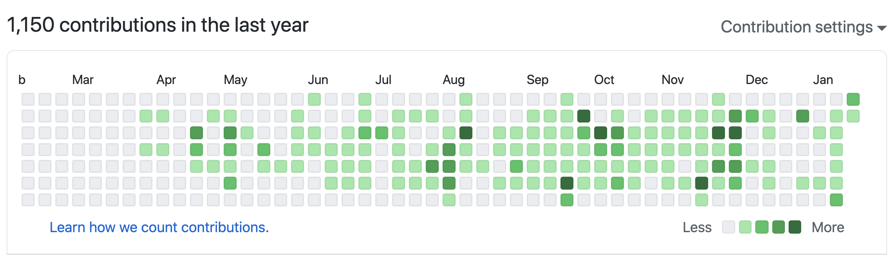

New Year New Blog
2020 has been a very special and challenging year. By working remotely throughout the year, a lot of thing has been changed such as new working environment, new projects, and most importantly new work-life balance. I am very lucky to find this work very well myself.
Not only I can work much more productive, but also have chance to take a pause to think out of the box. I found myself more outgoing and enjoy sharing my knowledge and experience. To be able to better present myself is one of the best gain in 2020.

This is also the reason I started this blog. I would like to use this as a diary to keep a record of my work and idea.
Welcome 2021, I can’t wait to check this space again at the end of year.